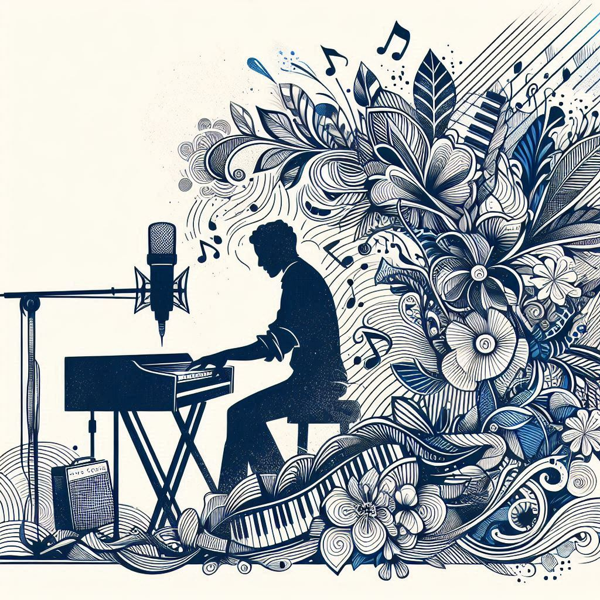

Do [A]
Ré [Z]
Mi [E]
Fa [R]
Sol [T]
La [Y]
Si [U]
Do aigu [I]
- Découvrez la correspondance entre sons, formes et couleurs -
♪ et rejouez votre propre performance sensorielle ♫
Inspiré par :
Art et Synesthésie
+
Étude d'immersion